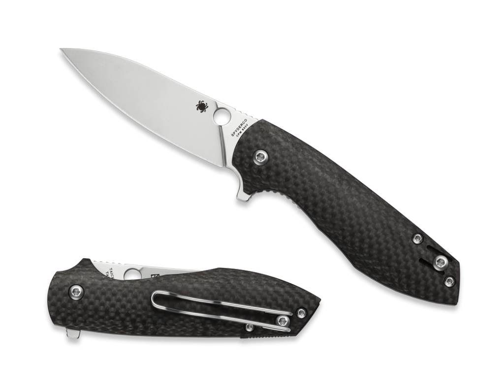

The Spyderco Positron is a relatively new offering from one of the largest cutlery manufactures.
It utilizes a flipper mechanism to deploy the knife and features ball bearings on the pivot system for a smooth easy opening.

Blade Steel: CPM S30v
Blade LengthL 3.05 inches
Weight: 2.6 oz.
Handle Material: Carbon Fiber
Country of Manufacture: Taiwan
Home Spyderco Positron Benchmade Griptillian Kershaw Launch 3